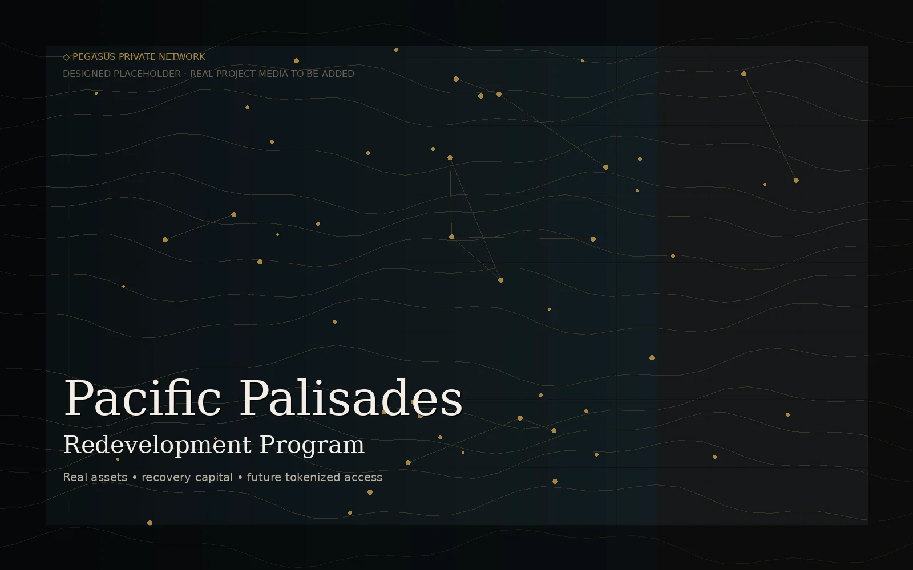
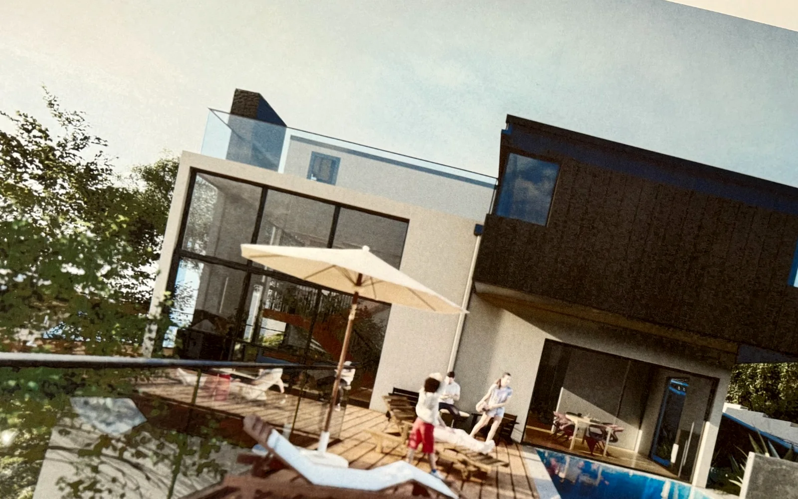
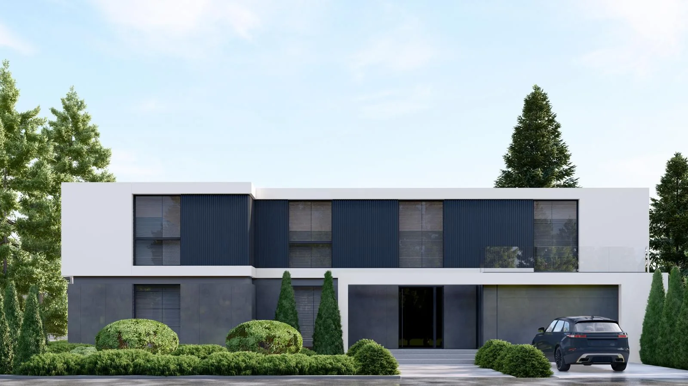
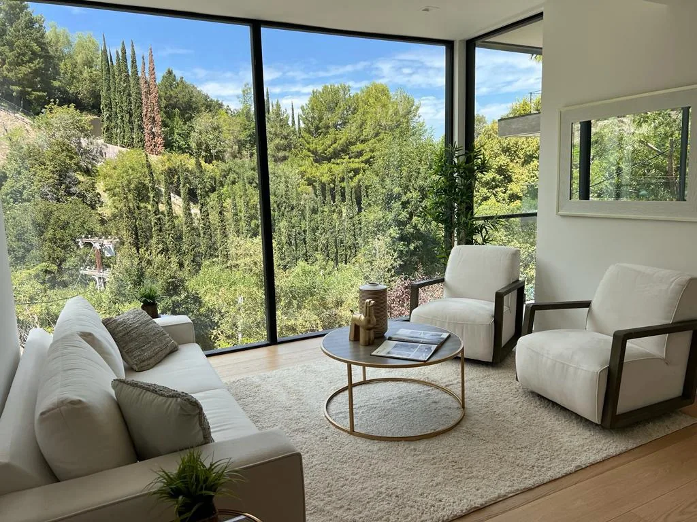
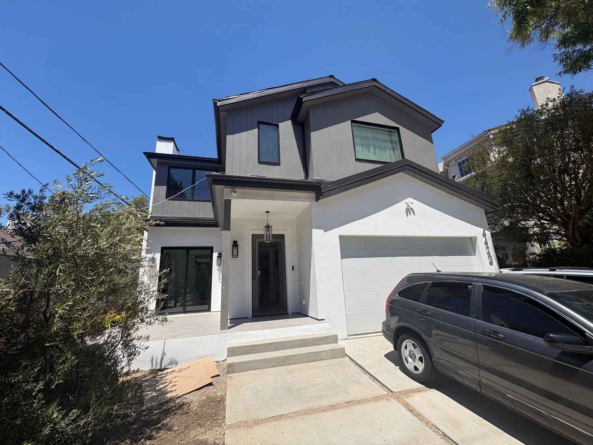
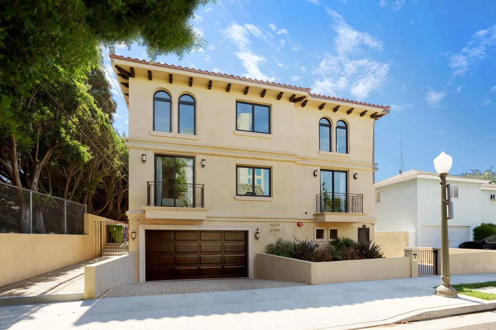
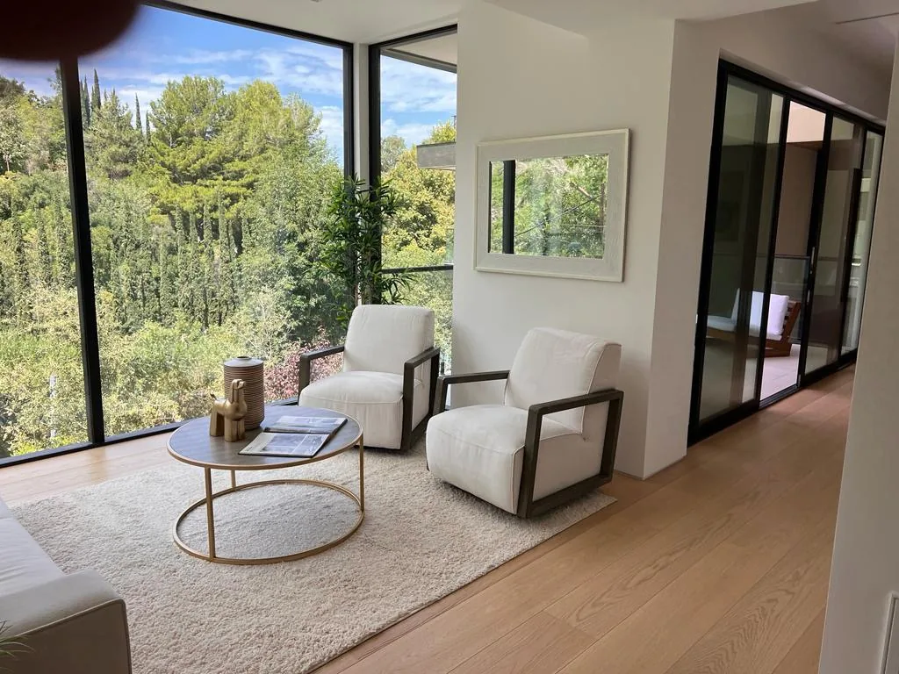
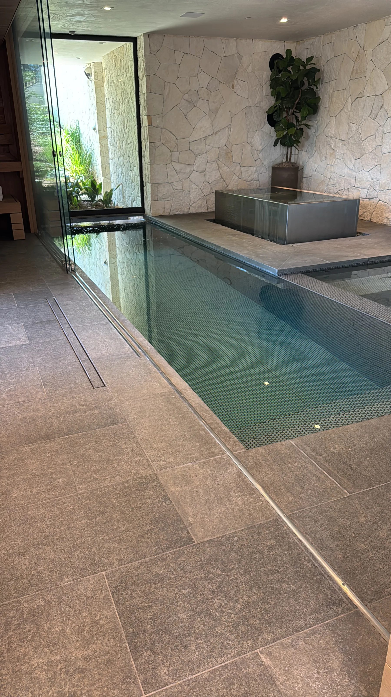

A real-world asset with economics, documents, rights, risks, and a story.
Private Digital Asset Network
Real assets. Digital units. Private access.
A private gateway for people learning how real estate and other real-world assets can be structured, digitized, managed, and eventually traded inside a controlled network.
Scroll
01 — Start here
Before anyone buys a token, they need to understand what the token represents.
Tokenization is not magic. It is a digital layer placed on top of a real legal and financial structure. The asset can be real estate, private credit, development equity, income-producing property, infrastructure, a redevelopment program like Pacific Palisades, or another real-world asset.
The purpose of Pegasus Private Network is to make that first step comfortable: clear education, private access, qualified participation, and a path toward digital ownership infrastructure.
A legal and financial wrapper that defines who owns what and how participation works.
A token or digital record that represents approved participation in that structure.
A private environment where access, review, compliance, communication, and transfers can be controlled.
02 — Tokenization 101
What tokenization means in plain English.
Plain definition
A real asset is placed into an approved structure. Participation in that structure is divided into digital units. Those units may represent economic rights, access rights, income participation, ownership records, or transfer rights depending on the documents and legal design.
It is not just crypto
The asset comes first. Blockchain or digital ledger technology is only the recordkeeping and transfer layer.
It is not public noise
A serious digital asset network controls access, eligibility, documents, communications, and compliance.
It is not guaranteed income
Returns, liquidity, and transferability depend on the asset, structure, market, and legal permissions.
03 — How it works
From real asset to digital ownership layer.
Asset review
Review the property, development, income stream, collateral, sponsor, documents, risk profile, and potential investor fit.
Legal structure
Create the entity, rights, disclosures, offering terms, transfer rules, investor eligibility, and compliance workflow.
Digital issuance
Convert approved participation into digital units, tokens, or electronic records connected to the underlying structure.
Investor onboarding
Use KYC, AML, accreditation or suitability checks, e-signatures, payment rails, and document acknowledgement.
Ongoing management
Track cap table, holdings, distributions, updates, votes, documents, communications, and investor reporting.
Future marketplace
Allow approved members to request transfers or trade eligible digital positions when legally and technically available.
04 — Platform functions
The capabilities below describe the planned platform. No investment offering, token issuance, trading, payments, or custody is available through this educational website.
The private network needs more than a beautiful website.
A real digital asset platform must support both sides of the market: the people issuing or sponsoring assets and the qualified participants reviewing, purchasing, holding, and potentially transferring them.
Investor side
Investor dashboard
- KYC / AML / accreditation check
- E-signature and document acknowledgement
- Wallet or account connection
- Share or token purchase workflow
- Portfolio status and reporting
- Investor updates and communication
- Member-to-member transfer request layer
Pegasus layer
Private network controls
- Member profiles and role-based access
- Deal presentation rooms
- Eligibility gating before access
- Capital partner introductions
- Compliance-first data room
- AI-assisted education and navigation
- Marketplace readiness framework
Issuer side
Issuer dashboard
- Deal presentation page
- Share classes, rights, and terms
- Cap table and token holder records
- Legal document library
- Distribution or dividend management
- Shareholder meetings and voting
- Investor communication tools
05 — Primary issuance
Primary issuance is where a real asset becomes a digital asset opportunity.
This is the first issuance of digital participation units. The goal is not to “sell coins.” The goal is to present a real asset, define the rights, approve the participants, collect required documents, and record ownership in a cleaner digital environment.
For investors, the experience must feel simple. Behind the scenes, the platform must handle eligibility, signatures, documents, payments, records, communication, and compliance.
Deal presentation
Documents
KYC / AML
Accreditation
Payments
Ownership registry
06 — Redevelopment programs
Some opportunities are not one property. They are a program.
Pacific Palisades belongs in the platform because it teaches a larger idea: tokenization does not have to stop at one building. A future digital asset structure can represent a carefully organized redevelopment program, subject to legal design, asset selection, risk controls, and participant eligibility.
For members, the educational question is simple: what is the asset base, what rights are being offered, how is capital used, how are updates reported, and what future transferability may exist inside the network?
Land / lots
Individual parcels, land positions, or redevelopment-ready opportunities can become part of a structured thesis.
Entitlements
Design, approvals, permits, and timing become part of the value-creation story.
Construction
Capital can be allocated across phases with reporting, milestones, and controls.
Exit / income
Future sale, hold, refinance, or income strategies define how value may be monetized.
Featured project — in preparation
Vista Del Mar. Seventeen homes, one hillside, a community coming back.
In January 2025 the Palisades fire took seventeen townhomes at 1900–1932 Palisades Drive. Eight neighboring homes survived. Vista Del Mar is the plan to bring the other seventeen back: one coordinated rebuild instead of seventeen separate struggles.
It is also the first project we intend to structure the way this network describes: a real asset, a clean legal entity, and a digital ownership record for the people who help fund it.
Homes17
townhomes rebuilt on their original site
ReadyPlans in hand
original plans available, debris removal complete
StandardWildfire-zone code
rebuilt to current California fire-zone building standards; steel framing under evaluation
Window2026–2028
target construction period
Preliminary capital structure
$41.36M total project budget, preliminary
The equity portion is the part we intend to open to qualified participants, recorded as digital units of the project entity.
How participation is being designed
- 01
One project entity owns Vista Del Mar. Participants would hold membership interests in that entity, not in a pool of unrelated assets.
- 02
Ownership is recorded on a permissioned digital register. Units move only between approved, verified members, after required holding periods.
- 03
Participation is planned under Rule 506(c) of Regulation D, open only to verified accredited investors, with offering documents to be prepared with securities counsel.
- 04
Updates, construction milestones, documents and any distributions run through the private network, under the project's governing documents.
Participate
Accredited investors
Join the early interest list for the equity portion. You will receive the offering documents when they are final. Nothing is sold before then.
Register interest →Finance
Construction lenders
Construction financing is arranged separately from the equity. Lenders can reach the sponsor through Pegasus Capital Network: one senior loan or a phased structure, building by building.
View on Capital Network →Come home
Future residents
Former owners, neighbors and families who want to live here. Join the residence interest list to hear first. Homes are not yet offered for sale.
Join the list →Build
Partners
Architects, contractors, suppliers, insurers and fire-resilience specialists who want to be part of rebuilding the Palisades.
Introduce your firm →Sponsor
Pegasus Lenders Group LLC
Development partner
California Residential Development Partners
General contractor
JLC Builders Inc., licensed since 1992
Vista Del Mar is a project in preparation. The property has not yet been acquired, and all figures are preliminary and subject to change. No securities are being offered or sold on this website. Any offering will be made only by the project's issuer, to verified accredited investors, through its own offering documents. Registering interest creates no obligation and no money is accepted. The sponsor, Pegasus Lenders Group LLC, is affiliated with Pegasus Private Network and Pegasus Capital Network. Homes are not offered for sale, and no reservations or deposits are accepted. Investing in a development project involves risk, including loss of principal.
07 — Asset examples
Examples help people understand what can be digitized — from single assets to redevelopment programs.
The assets below are representative examples of real-asset categories that may fit a private digital asset network. They are not active public offerings. Participation, eligibility, token issuance, and tradability are subject to legal, regulatory, and platform approval.

Redevelopment program · Recovery capital · Future digital access
Pacific Palisades
A redevelopment-program example showing how multiple recovery opportunities, land positions, entitlements, construction phases, and future project economics could be organized into a private real-asset digital network.
ProgramRedevelopmentPrivate access

Future development · Real-asset-backed strategy
Sky Lane
A future development example showing how land, design, construction, and value creation can become a structured digital asset narrative.
DevelopmentValue creationFuture token layer

Residential development · Asset creation
Hutton Place
A development example where construction progress, market positioning, and monetization can be organized into a digital asset thesis.
BuildStructureExit

Stabilized real asset · Preservation
Hollyline Estate
A stabilized real-asset example focused on scarcity, privacy, location, and long-term value preservation.
StabilizedScarcityHold

Completed asset · Monetization path
Noble Avenue
A completed value-creation example showing how private development can move from capital deployment to monetization.
CompletedResidentialExit

Income-producing asset · Stability layer
Missouri Residences
An income-oriented real asset category that can support yield-focused digital asset participation.
IncomeStabilityHold
08 — Secondary market
The long-term goal is a private market around digital asset positions.
Primary access
Members discover approved real-asset opportunities through a controlled network.
- Asset previews
- Project briefings
- Eligibility review
Digital ownership
Qualified participants may access structured asset-backed digital units when offerings are available.
- Tokenized participation
- Digital records
- Private dashboard
Future transferability
Marketplace infrastructure may support compliant transfers between approved members.
- Member-to-member requests
- Compliance controls
- Platform approval workflow
09 — Pegasus token concept
A network token can become part of the access infrastructure.
Phase 01
Education
Explain real-asset tokenization before asking people to understand advanced digital markets.
Phase 02
Private access
Build member profiles, role-based access, and qualified participation inside Pegasus Capital Network.
Phase 03
Asset tokens
Issue asset-backed digital units only where legal structure, disclosures, and compliance allow.
Phase 04
Network utility
A future Pegasus token may support access, platform utility, governance, and ecosystem participation, subject to legal approval.
10 — Private network
Designed for capital that values discretion, structure, and access.
This is not a public crypto crowd. It is a private network for investors, sponsors, developers, lenders, brokers, and strategic partners who want to review opportunities without unnecessary exposure.
The public site teaches the concept. Pegasus Capital Network becomes the operating system: profiles, deal rooms, AI guidance, matching, communication, and platform controls.
Enter Pegasus Capital Network →11 — FAQ
Questions people should ask before they join.
What is real-asset tokenization?
It is the process of connecting a real asset or asset structure to digital units that can represent participation, records, rights, or access depending on the legal documents.
What do investors actually own?
Ownership depends on the structure. A participant may own units, interests, rights, or economic participation in an entity or asset structure. The documents define the rights — not the marketing language.
Is this crypto?
It may use blockchain or digital ledger tools, but the foundation is the real asset and legal structure. The technology is the infrastructure layer.
Who can participate?
Participation is expected to be limited to qualified or approved members, subject to KYC, AML, investor suitability, accreditation where required, and legal eligibility.
Can tokens be traded?
The long-term goal is controlled transferability inside a private marketplace. Trading, transfers, or resale will depend on securities laws, platform rules, holding periods, eligibility, and regulatory approval.
How do distributions work?
If an asset structure provides income or distributions, those payments would be handled according to the governing documents, ownership records, and platform payment workflow.
Can a redevelopment program like Pacific Palisades be tokenized?
Potentially, but only if the program is properly structured. A redevelopment strategy may include multiple lots, phases, rights, documents, risk disclosures, capital allocations, and reporting. The digital layer should not replace the legal structure — it should make participation, records, and communication easier to manage.
What is the role of Pegasus Private Network?
It is the educational and private access layer: helping members understand real-asset digitization and request access to future network opportunities.
What is Pegasus Capital Network?
It is the operating system layer: profiles, deal rooms, capital matching, AI assistance, investor workflows, and infrastructure for structured real estate capital.
12 — Visual asset layer
Real assets remain visible. The ownership layer becomes digital.


13 — Request access
Private access begins with qualification.
Registration is an expression of interest only, creates no obligation, and does not provide access to an offering. Pegasus does not guarantee returns or liquidity. Tokenized assets may involve loss of principal and limited or no resale market.
Important: This website is for informational and network-access purposes only. It is not an offer to sell securities, tokens, or investment products. Any future offering, token, or marketplace feature will be subject to legal, regulatory, eligibility, disclosure, and compliance requirements.
Pegasus is not a broker-dealer, funding portal, investment adviser, or exchange. This website does not raise capital, sell securities, custody assets, or guarantee returns, liquidity, or availability. Any future investment opportunity would be offered only by its own issuer, under Regulation CF, Regulation A+, Regulation D, or other applicable rules, through appropriately licensed and registered intermediaries where required, with its own disclosures. Tokenized real estate carries significant risk, including loss of principal and limited or no resale market. Registering interest creates no obligation on either side.